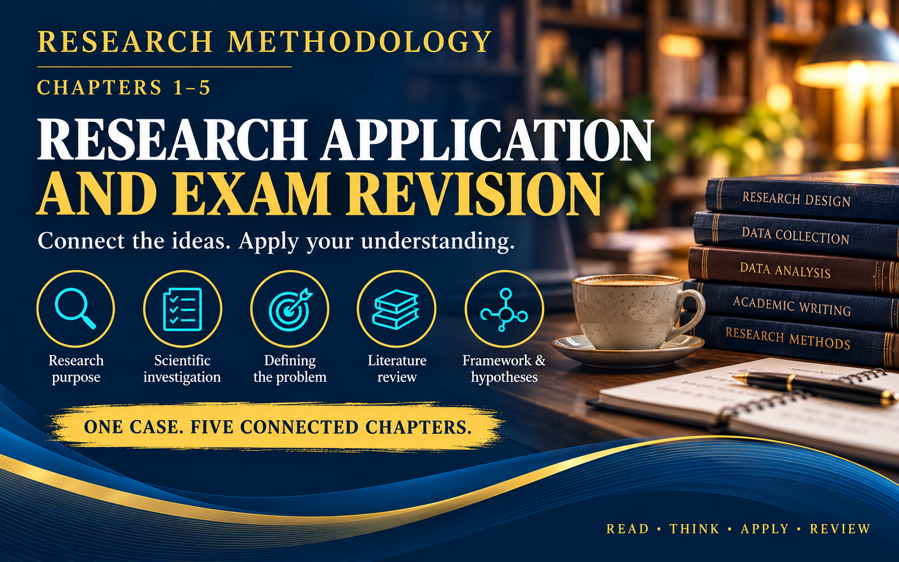

Chapters 1–5 · Guided revision
Connect the ideas.
Apply your understanding.
Work through one business case, organise your answers and generate a PDF to submit through UUM Online Learning.

Submission: upload the PDF generated by the workspace to the UUM Online Learning. Generating or downloading the file does not submit your work.
Individual, open-material revision. No external searching is required. Save a downloadable draft regularly.